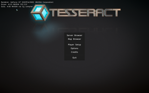
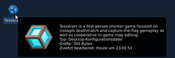
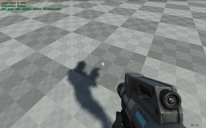

Tesseract Entwicklungsversion
Archivierte Anleitung
Dieser Artikel wurde archiviert, da er - oder Teile daraus - nur noch unter einer älteren Ubuntu-Version nutzbar ist. Diese Anleitung wird vom Wiki-Team weder auf Richtigkeit überprüft noch anderweitig gepflegt. Zusätzlich wurde der Artikel für weitere Änderungen gesperrt.
Achtung!
Die Verwendung dieses Howto geschieht auf eigene Gefahr. Bei Problemen mit der Anleitung melde dies bitte in der dazugehörigen Diskussion.
Hinweis:
Dieses Howto wurde zuletzt von cornix am 01.12.2015 unter Ubuntu 14.04 mit der Subversion Revision 2055 von Tesseract erfolgreich getestet. Der Abschnitt zum Update wurde zuletzt mit dem Update von Revision 1970 auf 2055 getestet.
Dieses Howto beschreibt die Installation, das Update und die Deinstallation der Entwicklungsversion von Tesseract.
Dazu sind einige Befehle aufgeführt, die per copy & paste in ein Terminal übernommen und darin ausgeführt werden.
Installation¶
Voraussetzungen¶
Es werden die Versionsverwaltung Subversion, die Entwicklerpakete des SDL 2, der GNU-C++-Compiler und das Werkzeug GNU make benötigt:
sudo apt-get install -y subversion libsdl2-dev libsdl2-image-dev libsdl2-mixer-dev g++ make
|  |
| Startbildschirm |
Spiel¶
Im Homeverzeichnis wird ein Spieleordner angelegt, falls noch keiner existiert. Dorthin wird der Quellcode geladen und anschließend kompiliert:
mkdir ~/Spiele cd ~/Spiele svn checkout svn://svn.tuxfamily.org/svnroot/tesseract/main tesseract cd tesseract make -C src install
Über den Befehl ~/Spiele/tesseract/tesseract_unix kann das Spiel nun gestartet werden
Menüeintrag¶
Ein Programmstarter wird wie folgt angelegt:
|  |
| Starter auf dem Desktop |
cat > tesseract.desktop <<ENDE
[Desktop Entry]
Version=1.0
Name=Tesseract
Comment=Tesseract is a first-person shooter game focused on instagib deathmatch and capture-the-flag gameplay as well as cooperative in-game map editing.
Exec=${HOME}/Spiele/tesseract/tesseract_unix
Icon=${HOME}/Spiele/tesseract/media/interface/cube.png
Path=${HOME}/Spiele/tesseract
Terminal=false
Type=Application
Categories=Game;
ENDE
mv tesseract.desktop ~/.local/share/applications/ Update¶
Das Quellverzeichnis wird bereinigt, die Änderungen werden eingespielt und anschließend wird die neue Revision kompiliert:
|  |
| In-game map editing |
cd ~/Spiele/tesseract make -C src clean svn update make -C src install
Deinstallation¶
Zur Deinstallation müssen nur das Spielverzeichnis und der Menüeintrag sowie, falls gewünscht, die Konfigurationsdateien gelöscht werden:
# Spiel: rm -r ~/Spiele/tesseract # Menüeintrag rm ~/.local/share/applications/tesseract.desktop # Konfiguration: rm -r ~/.tesseract

 - Übersicht aller Howto-Artikel
- Übersicht aller Howto-Artikel- Erstellt mit Inyoka
-
 2004 – 2017 ubuntuusers.de • Einige Rechte vorbehalten
2004 – 2017 ubuntuusers.de • Einige Rechte vorbehalten
Lizenz • Kontakt • Datenschutz • Impressum • Serverstatus -
Serverhousing gespendet von